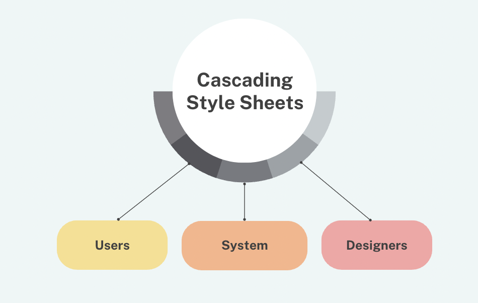

What Have I Learned
July 29th, 2023
The video discussed the concepts of cascading style sheets and the principles of how CSS is addressing problems in web design. Miriam Suzanne mentioned that CSS really has to do with the relationships between itself with the users, the designers, and the system. While users and designers help define the properties and features of CSS, the system, which are also the browsers and devices, really implements the properties and values, and gives support to CSS. I found it meaningful when Miriam highlighted in the video that one of the main principles/reasons for using CSS is that CSS allows for universal adaptability and accessibility. It works with the browsers to present the information to every user with varying needs, available resources, and support.
Writing CSS In 2023: Is It Any Different Than A Few Years Ago? by Geoff Graham is an interesting article that I found on sidebar.io. In this article, the author discusses his own experience of using the new features/properties developed in CSS, and he also shares his thoughts on them. Geoff emphasizes in the article that CSS has experienced huge evolution over the years and it is constantly changing and improving. He introduces a lot of the newer properties used in CSS, such as @layer based, :is(), :where(), and prefers-color-scheme. The author does not go much into the details of how each property works, instead, he discusses why and how these new properties have changed the way he writes CSS. From reading his article, I not only learned about some of the new properties in CSS but also how CSS is changing to adapt to the various user's needs and to help improve user experience on the web.
This course is the first time that I learn about HTML and CSS. When I was doing web design prior to this course, I mostly focused on visual and graphic elements. Layout was taken into consideration but I did not have a sense of how to implement them onto a real web page. I have learned a lot in this class, not just the concepts and syntax of HTML and CSS, but most importantly, I learned how to understand the structure of a web page and how to bring visual design to real websites. The mindset of how to structure the content and consider the layout on a page when designing, in general, became consistent. Moreover, I learned about the history and the development of web design, and the principles behind it. The video and the article helped me understand that HTML and CSS are more than designing for the web. It is about the constant update and improvement within the field, the challenges designers take on, adapting to users' needs and user experience, and beyond.